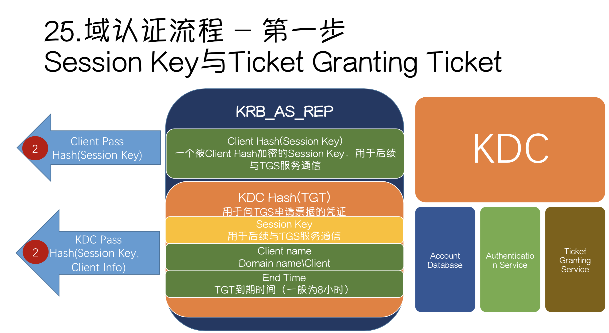

0x00 本地认证
本地认证基础知识
在本地登录Windows的情况下，操作系统会将用户输入的密码作为凭证和系统中存储的密码进行验证
SAM文件存储路径为%SystemRoot%\system32\config\sam
在输入密码的过程中，会将密码进行加密为hash值，然后查找系统SAM文件中用户密码对应的hash值进行比较，如果相同，则证明认证成功，密码正确。
Windows本身不保存明文密码，只保留密码的 Hash
NTLM Hash 与 NTLM
在Windows中，密码Hash称为NTLM Hash，其中NTLM全程为NT LAN Manager
NTLM是一种网络认证协议，与NTLM Hash的关系就是：NTLM网络认证协议是以NTLM Hash作为根本凭证进行认证的协议。
在本地认证的过程中，就是将用户输入的密码转换称NTLM Hash与SAM表中的NTLM Hash进行比较认证。
NTLM Hash的产生
假设密码为admin，产生流程为：系统将admin转换成十六进制，经过Unicode转换后，再使用MD4进行加密，最后得到NTLM Hash
1 | admin -> hex(16进制编码) = 61646d696e |
本地认证流程·
1 | winlogon.exe -> 用户输入 -> lsass.exe -> 认证 |
每当用户注销、重启、锁屏后，操作系统会让winlogon.exe显示登录页面，在用户输入后将密码交给lasses.exe进程，这个进程中就会保存一份明文密码，将明文密码加密成NTLM Hash再和SAM数据库中的Hash值进行比较认证。
- Windows Logon Process（即winlogon.exe），是Windows NT 用户登录程序，用于管理用户登录和退出
lsass.exe进程用于实现Windows安全策略（本地安全策略和登录策略）。我们平常说的抓密码就是导出lasses.exe内存中存储的明文密码。
LM Hash
在NTLM协议出现前，Windows认证协议为LM（LAN Manager）协议。
LM协议和NTLM协议的认证机制相同，但是加密算法不同
但LM协议不够安全，现在已经淘汰使用了
LM Hash的产生流程：
1 | 将所有的小写字母转换成大写字母 |
在上面的LM Hash产生过程中，脆弱点就在于DES的KeyKGS!@#$%是固定的，也就是说，有了Key就能够解出原文。并且通过LM Hash的特征判断原文的密码长度是否超过7位字符
0x01 网络认证
在内网渗透中，经常遇到工作组环境，而工作组环境是一个逻辑 上的网络环境(工作区)，隶属于工作组的机器之间无法互相建 立一个完美的信任机制，只能点对点，是比较落后的认证方式， 没有信托机构。
假设A主机与B主机属于同一个工作组环境，A想访问B主机上的资料，需要将一个存在于B主机上的账户凭证发送至B主机，经过认证才能够访问B主机上的资源。
我们接触比较多的SMB共享文件的案例，SMB的默认端口是445。
早期SMB协议在网络上传输明文口令。后来出现LAN Manager,Challenge/Response 验证机制，简称LM，它是如此简单以至很容易就被破解，现在又有了NTLM以及Kerberos。
NTLM协议
NTLM协议是一种网络认证协议，它是基于挑战Chalenge/相应Response认证机制的一种认证模式。
Chalenge/Response
NTLM协议认证分为三步：
- 协商
- 质询
- 验证
协商: 主要用户确认双方协议版本
客户端主要再这一步向服务器确定协议的版本，是v1还是v2或者其他认证方式
质询：就是挑战Chalenge/相应Response认真机制起作用的范畴
验证：验证主要是再质询完成后，验证结果，是认证的最后一步
质询的完整过程：
- 客户端向服务器端发送用户信息(用户名)请求。
- 服务器接受到请求，生成一个16位的随机数，被称之为
Challenge， 使用登录用户名对应的NTLM Hash加密Challenge(16位随机字符)， 生成Challenge1。同时，生成Challenge1后，将Challenge(16位随机 字符)发送给客户端。// Net NTLM Hash = Challenge1 = NTLM Hash(Challenge) - 客户端接受到
Challenge后，使用将要登录到账户对应的NTLM Hash加密Challenge生成Response，然后将Response发送至服务器端。 - 服务器端收到客户端的
Response后，比对Chanllenge1与Response是否相等，如果相等则通过认证。
使用另外一种方式解读：
Server接收到Client发送的用户名后，判断本地账户列 表是否有用户名share_user
- 如果没有，返回认证失败
- 如果有，生成
Chanllenge，并且从本地查找share_user对应的NTLM Hash，使用NTLM Hash加密Chanllenge，生成一个Net-NTLM Hash存在内存中，并将Chanllenge发送给Client
Client接收到Chanllenge后，将自己提供的share_user的密码转换为NTLM Hash，使用NTLM Hash加密Chanllenge，这个结果叫Response，表现形式是Net-NTLM Hash，最后将Response发送给ServerServer接收到Client发送的Response，将Response与之前的Net-NTLM Hash进行比较，如果相等，则认证通过
注意：
Chanllenge是Server产生的一个16字节的随机数，每次认证都不同Response的表现形式是Net-NTLM Hash，它是由客户端提供的密码Hash加密Server返回的Chanllenge产生的结果
NTLM V2协议
NTLM V1与NTLM V2最显著的区别就是Challenge与加密算法不同，共同点就是加密的原料都是Challenge
不同点：
- Challage：
NTLM v1的Challenge有8位，NTLM v2的Challenge为16位 - Net-NTLM Hash：
NTLM v1的主要加密算法是DES，NTLM v2的主要加密算法是HMAC-MD5
Pass The Hash
在内网渗透中，我们经常会需要抓取管理员的密码、NTLM Hash，通过搜集这些信息有助于我们扩大战果，尤其是在域环境下
- 什么是哈希传递
哈希传递是能够在不需要账户明文密码的情况下完成认证的一个技术。
- 哈希传递的作用
解决了我们渗透中获取不到明文密码、破解不了NTLM Hash而又想扩大战果的问题
Pass The Hash 使用条件
- 哈希传递需要被认证的主机能够访问到服务器
- 哈希传递需要被传递认证的用户名
- 哈希传递需要被传递认证用户的
NTLM Hash
要完成一个NTLM认证，第一步需要客户端将自己要参与认证的 用户名发送至服务器端，等待服务器端给出的Challenge
其实哈希传递就是使用用户名对应的NTLM Hash将服务器给出的 Chanllenge加密，生成一个Response，来完成认证。
Pass The Hash能够完成一个不需要输入密码的NTLM协议认证流程，所以不算是一个漏洞，算是一个技巧。
Pass The Hash工具：
- Smbmap
- CrackMapExec
- Smbexec
- Metasploit
Kerberos域认证
Active Directory(活动目录)概念
Windows提供了为企业管理资产、服务、网络对象进行组织化的管理，这非常符合企业架构的管理模式。而承载这些管理机制的就是活动目录服务。如果要搭建一个域，就需要安装活动目录服务。
活动目录服务以域名来划分域的边界，域外就不属于管理范围了，也就是说，一个域对应一个域名，域之间也可以相互信任。
Active Directory存储了有关网络对象的信息，并且让管理员和用 户能够轻松地查找和使用这些信息。Active Directory使用了一种 结构化的数据存储方式，并以此作为基础对目录信息进行合乎逻 辑的分层组织。- 网络对象分为:用户、用户组、计算机、域、组织单位以及安全策略等。
Active Direectory(活动目录)功能
- 服务器及客户端计算机管理：管理服务器及客户端计算机账户，所有服务器及客户端计算机加入域管理并实施组策略。
- 用户服务：管理用户域账户、用户信息、企业通讯录(与电子邮件系统集成)、用户组管理、用户身份认证、用户授权管理等，按省实施组管理策略。
- 资源管理：管理打印机、文件共享服务等网络资源。
- 桌面配置：系统管理员可以集中的配置各种桌面配置策略，如: 用户使用域中资源权限限制、界面功能的限制、应用程序执行特 征限制、网络连接限制、安全配置限制等。
- 应用系统支撑：支持财务、人事、电子邮件、企业信息门户、办 公自动化、补丁管理、防病毒系统等各种应用系统。
在域中，网络对象可以相互访问，但是在真实情况中，需要对某些部门的计算机进行限制，例如：销售部门不能访问技术部门的服务器。
这个中间就需要Kerberos认证协议来验证网络对象间的权限。
域认证体系 - Kerberos
Kerberos是一种网络认证协议，其设计目标是通过密钥系统为客户机 / 服务器应用程序提供强大的认证服务。该认证过程的实现不 依赖于主机操作系统的认证，无需基于主机地址的信任，不要求网络上所有主机的物理安全，并假定网络上传送的数据包可以被任意地读取、修改和插入数据。在以上情况下，Kerberos作为一种可信任的第三方认证服务，是通过传统的密码技术(如:共享 密钥)执行认证服务的。
域认证所参与的角色
Kerberos的标志是三只狗头，狗头分别代表以下角色：
- Client
- Server
- KDC(Key Distribution Center) = DC(Domain Controller)
Kerberos认证协议的基础概念：
票据（Ticket）：是网络对象互相访问的凭证。
TGT（Ticket Granting Ticket）：入场券，通过入场券能够获得票据，是一种临时凭证的存在。
KDC负责管理票据、认证票据、分发票据，但是KDC不是一个独立的服务，它由以下服务组成：
- Authentication Service: 为client生成TGT的服务
- Ticket Granting Service: 为client生成某个服务的ticket
另外还需要介绍一个类似于本机SAM的一个数据库：AD，全称叫Account Database，存储所有client的白名单，只有存在于白名单的client才能顺利申请到TGT。
从物理层面看，AD与KDC均为域控制器(Domain Controller)。
域认证粗略流程
- client向kerberos服务请求，希望获取访问server的权限。kerberos得到了这个消息，首先得判断client是否是可信赖的，也就是白名单黑名单的说法。这就是AS服务完成的工作，通过在AD中存储黑名单和白名单来区分client。成功后，返回AS返回TGT给client。
- client得到了TGT后，继续向kerberos请求，希望获取访问 server的权限。kerberos又得到了这个消息，这时候通过client 消息中的TGT，判断出了client拥有了这个权限，给了client访问server的权限ticket。
- client得到ticket后，终于可以成功访问server。这个ticket只是针对这个server，其他server需要向TGS申请。
域认证
首先，客户端需要发送自己的身份信息到KDC，身份信息中起码包含用户名，KDC根据用户名在AD中寻找是否在白名单中，然后根据用户名提取到对应的NTLM Hash。
KDC此时生成一个随机字符串，叫Session Key，使用用户名对应的NTLM Hash加密Session Key，作为AS数据，使用KDC中某个用户的NTLM Hash加密Session Key和客户端的信息，生成TGT。
- Session Key用于客户端向TGS服务通信。
- 域内所有网络对象的凭证都在AD中保存
- KDC中某个用户指的是krbtgt
数据结构：


其中，TGT的到期时间为8小时，如果超过了8小时，还需要重新申请TGT，不能之间进入下一步获取Ticket。
Kerberos是一个假设网络环境不安全的情况下能够正常进行认证工作的协议。
第一步中，KDC返回的TGT客户端是无法解密的，因为它没有KDC Hash，如果有，我们就可以伪造黄金票据，这个是后话了。

第二步客户端需要提供TGT与第一步中使用自己NTLM Hash解密出来的Session Key加密的客户端信息跟时间戳。
如果假设这个数据被中间人窃取到，也无法在段时间内破解，因为KDC会校验时间戳。
KDC接到TGT与其他内容后，会首先解密TGT，只有KDC可以解密TGT，从TGT中提取到Session Key，再使用Session Key解密其他内容，解密出来的内容同TGT中的信息进行校验来确认客户端是否受信。
验证通过后，就会生成一个新的Session Key，我们称之为Server Session Key，这个Server Session Key主要用于和服务器进行通信。同时还会生成一个Ticket，也就是最后的票据了。
Ticket组成如下：

Server Hash：这个Hash是在AD中服务器计算机的NTLM Hash。

在第三步里，客户端向服务器请求，需要提供Ticket，Server Session Key加密的客户端信息与时间戳。
- Ticket客户端无法解密
- 服务器端通过解密
Ticket解密Server Session Key(Client info + Timestamp) - 比较时间长度
校验通过后，认证成功，该票据会一直存在客户端内存中。
域认证流程

- AS - REQ
Client 向 KDC 发起请求明文密码将会被加密为 hash时间戳使用 Client hash 进行加密然后作为认证票据TGT请求AS-REQ中的认证因子发送给KDC。
- AS - REP
KDC 使用 Client hash 进行解密如果结果正确就返回用 krbtgt hash 加密的 TGT 票据。TGT 里面包含 PACPAC 包含 Client 的 sidClient 所在的组。
- TGS - REQ
当 Client 请求票据授予服务TGS票据时用户需要向 KDC 展示TGT数据。KDC 会打开票据进行校验和检查。如果 KDC 能够打开票据并能通过校验和检查那么会认为 TGT 为有效票据。此时 TGT 中的数据会被复制以创建 TGS 票据。
- TGS - REP
KDC 使用目标服务账户的 hash 对 TGS 票据进行加密然后将结果发送给 Client。(这一步不管用户有没有访问服务的权限只要TGT 正确就返回 TGS 票据)
- AP - REQ
Client 访问目标服务并发送 TGS 票据去请求服务。
- AP - REP
服务使用自己的 hash 解密 TGS 票据。如果解密正确就拿着 PAC 去 KDC 查询 Client 有没有访问权限KDC 解密 PAC。获取 Client的 sid以及所在的组再根据该服务的 ACL判断 Client 是否有访问服务的权限。
白银票据（Silver Tickets）
白银票据特点：
- 不需要于
KDC进行交互 - 需要目标服务的
NTLM Hash
在第三步认证中的Ticket的组成：
1 | Ticket = Server Hash(Server Session Key + Client Info + End Time) |
当拥有Server Hash时，我们就可以伪造一个不经过KDC认证的一个Ticket。
PS: Server Session Key在未发送Ticket之前，服务器是不知道Server Session Key是什么的。 所以，一切凭据都来源于Server Hash。
伪造白银票据（Silver Tickets）
- 导出
Server Hash
1 | C:\files>mimikatz.exe "privilege::debug” "sekurlsa::logonpasswords" "exit" > log.txt |
- 伪造票据
1 | mimikatz “kerberos::golden /domain:<域名> /sid:<域 SID> /target:<目标服务器主机名> /service:<服务类型> /rc4:<NTLM Hash> /user:<用户名> /ptt" exit |
默认服务：
由于白银票据需要目标服务器的Hash，所以没办法生成对应域内所有服务器的票据，也不能通过TGT申请。因此只能针对服务器上的某些服务去伪造，伪造的服务类型列表如下:
| 服务注释 | 服务名 |
|---|---|
| WMI | HOST、RPCSS |
| Powershell Remoteing | HOST、HTTP |
| WinRM | HOST、HTTP |
| Scheduled Tasks | HOST |
| LDAP 、DCSync | LDAP |
| Windows File Share (CIFS) | CIFS |
| Windows Remote ServerAdministration Tools | RPCSS、LDAP、CIFS |
白银票据（Silver Tickets）防御
- 尽量保证服务器凭证不被窃取
- 开启PAC (Privileged Attribute Certificate) 特权属性证书保护 功能，PAC主要是规定服务器将票据发送给kerberos服务，由 kerberos服务验证票据是否有效。
开启方式：
将注册表中HKEY_LOCAL_MACHINE\SYSTEM\CurrentControlSet\Control\Lsa\Kerberos\Parameters中的ValidateKdcPacSignature设置为1。
黄金票据（Golden Tickets）
黄金票据的特点：
- 需要于
DC通信 - 需要
krbtgt用户的hash
这里的krbtgt hash就是之前讲的KDC Hash
黄金票据（Golden Tickets）伪造
伪造票据
1 | mimikatz "kerberos::golden /domain:<域名> /sid:<域SID> /rc4:<KRBTGT NTLM Hash> /user:<任意用户名> /ptt" exit |
Tickets 总结
- 黄金票据:从攻击面来看，获取krbtgt用户的hash后，可以在域中进行持久性的隐藏，并且日志无法溯源，但是需要拿到DC权限， 使用黄金票据能够在一个域环境中长时间控制整个域。
- 从防御角度来看，需要经常更新krbtgt的密码，才能够使得原有的票据失效。最根本的办法是不允许域管账户登录其他服务器。
- 白银票据:从攻击面来看，伪造白银票据的难度比伪造黄金票据的难度较小，因为一个域中的服务器如果对外的话，非常容易被入侵， 并且容易被转储Server。
- 从防御角度来看，需要开启PAC认证，但这会降低认证效率，增加DC的负担，最根本的还是要加固服务器本身对外的服务。
Windows Access Token
Windows Access Token 简介
Windows Token其实叫Access Token(访问令牌)，它是一个描述进程或者线程安全上下文的一个对象。不同的用户登录计算机后，都会生成一个Access Token，这个Token在用户创建进程或者线程时会被使用，不断的拷贝，这也就解释了A用户创建一个进程而该进程没有B用户的权限。
Access Token种类：
- 主令牌
- 模拟令牌
一般情况下，用户双击运行一个程序，都会拷贝explorer.exe的Access Token。
当用户注销后，系统将会使主令牌切换为模拟令牌，不会将令牌清除，只有在重启机器后才会清除。
Windows Access Token 组成
- 用户账户的安全标识符（SID）
- 用户所属的组SID
- 用于标识当前登录会话的登录SID
- 用户或用户组所拥有的权限列表
- 所有者SID
- 主要组的SID
- 访问控制列表
- 访问令牌的来源
- 令牌是主要令牌还是模拟令牌
- 限制SID的可选列表
- 目前的模拟等级
- 其他统计数据
Windows Access Token - SID（Security Identifiers）安全标识符
安全标识符是一个唯一的字符串，它可以代表一个账户、一个用户组、或者是一次登录。通常它还有一个SID固定列表，例如Everyone这种已经内置的账户，默认拥有固定的SID。
SID的表现形式：
- 域SID-用户ID
- 计算机SID-用户ID
- SID列表都会存储在域控的AD或者计算机本地账户数据库中。
Windows Access Token产生过程
每个进程创建时都会根据登录会话权限由LSA(Local Security Authority)分配一个Token(如果CreaetProcess时自己指定了 Token, LSA会用该Token，否则就用父进程Token的一份拷贝。
Windows Access Token令牌假冒实战
当用户注销后，系统将会使主令牌切换为模拟令牌，不会将令牌清除，只有在重启机器后才会清除。
可以使用多种工具查看目前系统上存在的模拟令牌：
- Incognito
- Powershell - Invoke-TokenManipulation.ps1
- Cobalt Strike - steal_token
Windows Access Token令牌假冒防御
禁止Domain Admins登录对外且未做安全加固的服务器，因为一旦服务器被入侵，域管理员的令牌可能会被攻击者假冒，从控制DC。
如果想清除假冒，重启服务器即可。